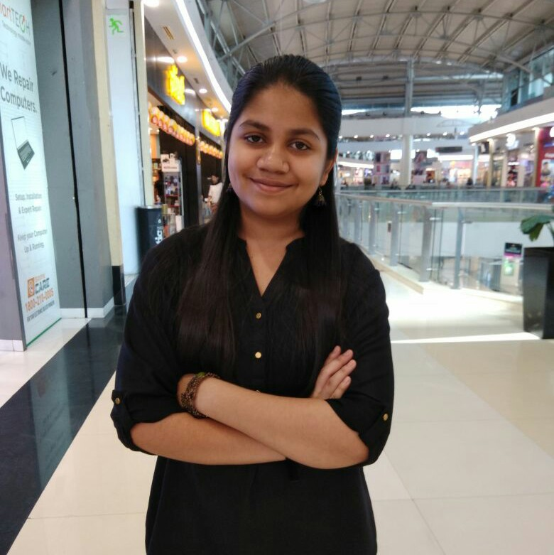

Arya Gawde

Hello! I am Arya Gawde, a first year undergraduate student at Indian Institute of Technology (IIT) Goa, pursuing a BTech degree in Computer Science and Engineering. I am from Mumbai, Maharashtra.
My hobbies include listening to various kinds of music, singing and reading books. I also enjoy playing sudoku.
Education
| Year of Graduation |
Degree |
Institution |
| 2024 |
B. Tech. |
Indian Institute of Technology Goa |
| 2021 |
12th Standard (Higher Secondary Certificate (HSC)) - State Board:
Maharashtra |
Ratanbai Walbai Junior College of Science, Mulund, Mumbai, Maharashtra |
| 2019 |
10th Standard (CBSE) |
New Horizon Scholars School, Airoli, Navi Mumbai, Maharashtra. |
1st-year Courses @ IIT Goa
Autumn Semester
- MTH101: Calculus by Dr. Sandipan De and Dr. Abhitosh Upadhyay
- PH101: Quantum Physics and Application by Dr. Santosh Kumar Das and Dr. Sudipta Kanungo
- CS101: Introduction to Computing by Dr. Clint P. George
- CH101: Physical Chemistry by Dr. Mantu Santra and Dr. E Siva Subramaniam Iyer
- CH102: Inorganic and Organic Chemistry by Dr. Raja Mitra and Santosh Kumar Das and Dr.
Rishikesh Narayan
- CH104: Chemistry Lab II by Dr. E Siva Subramaniam Iyer
- HS101: Foundation Programme in Humanities and Social Sciences by Dr. Sabiha Hashami
- CS100: Introduction to Profession by Dr. Neha Karanjkar
- NO101: National Sports Organization by Santosh Upadhyay
Spring Semester
- MTH1021: Basic Linear Algebra by Dr. Kalpesh Haria
- PH102: Electricity and Magnetism by Dr. Vaibhav Wasnik and Dr. Santosh Kumar
- PH104: Physics Lab by Dr. Sudipta Kanungo
- EE101: Introduction to Electrical and Electronics Engineering by Dr. Sheron Figardo and Dr.
Nandakumar Nambath
- BIO101: Introductory Biology by Dr. Sreenath Balakrishnan and Dr. Rishikesh Narayan
- ME102: Engineering Graphics and Introduction to Computer Aided-Drawing by Dr. Anirudha
Ambekar
- NO102: National Sports Organization by Santosh Upadhyay
- CS102: Software Tools by Dr. Clint P. George
Hobbies
My hobbies include: singing and listening to the various genres of music like:
Apart from this, I also enjoying reading novels and playing sudoku.